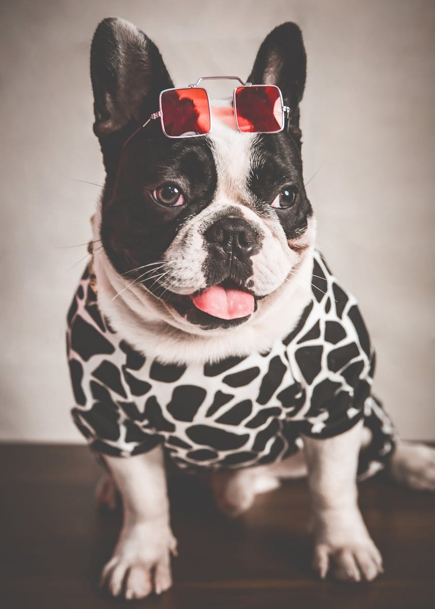
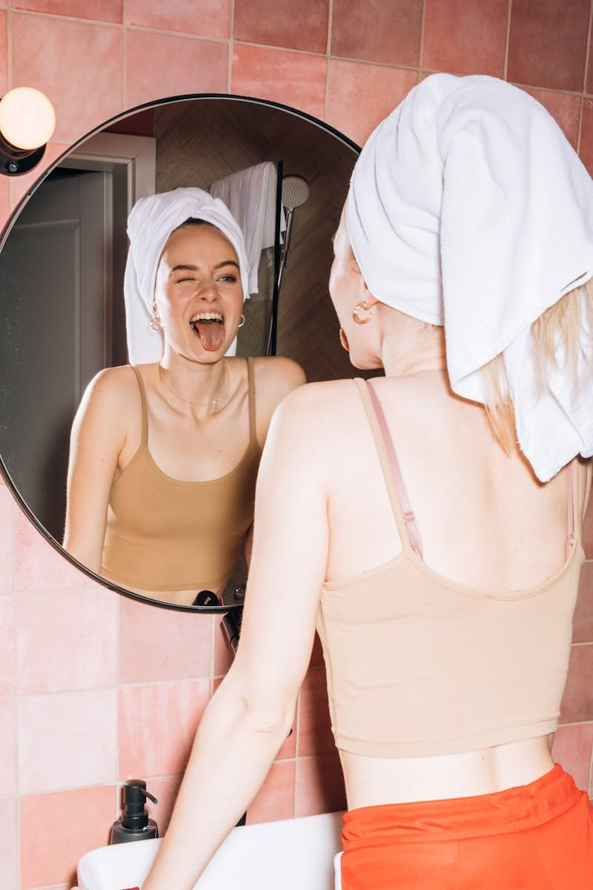
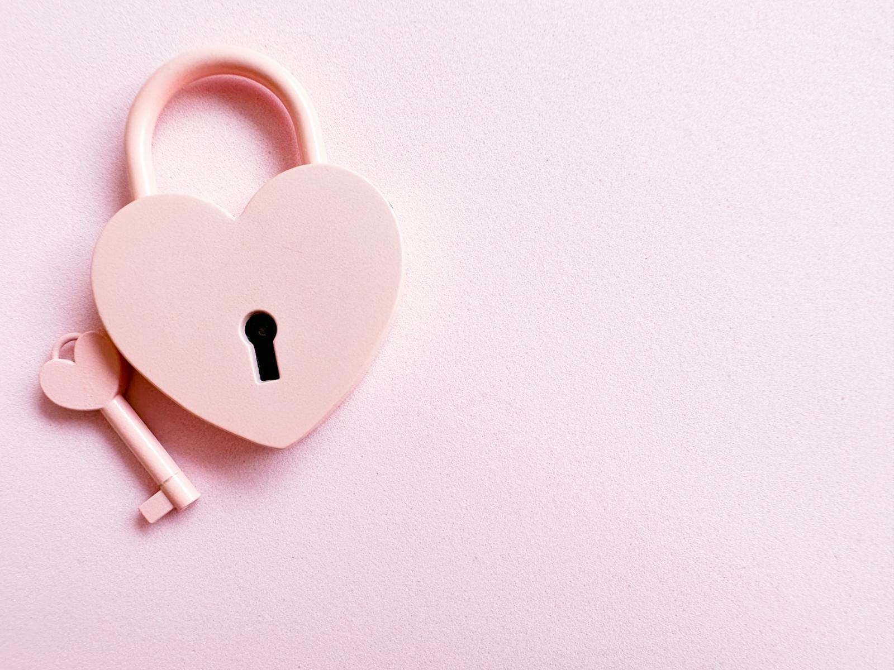
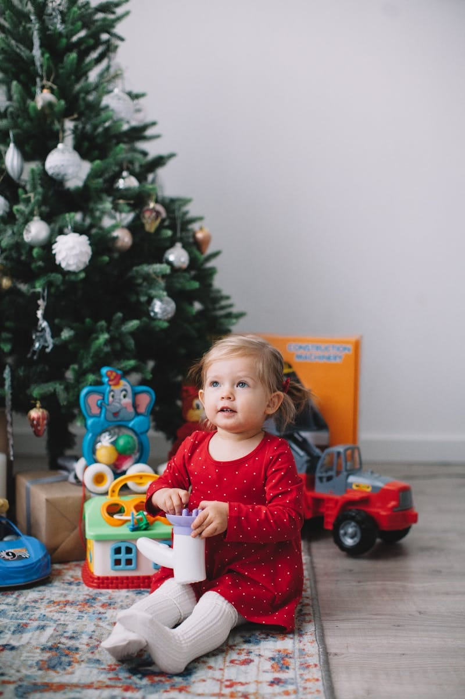
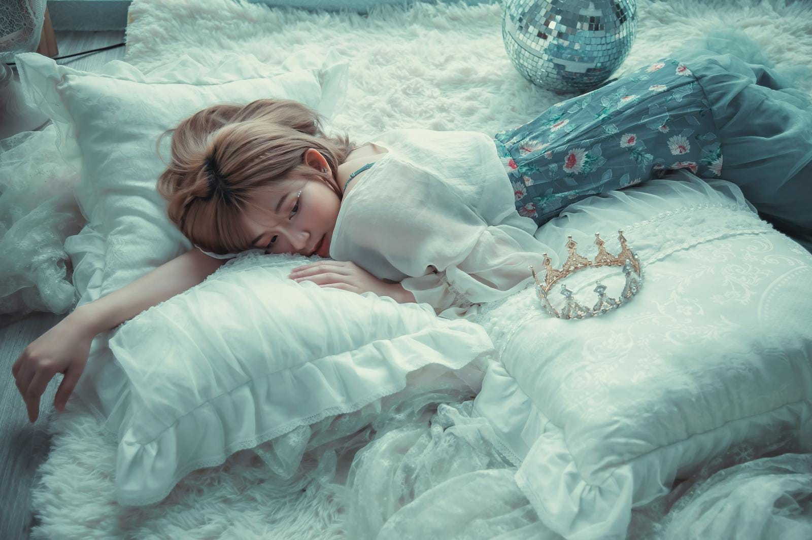
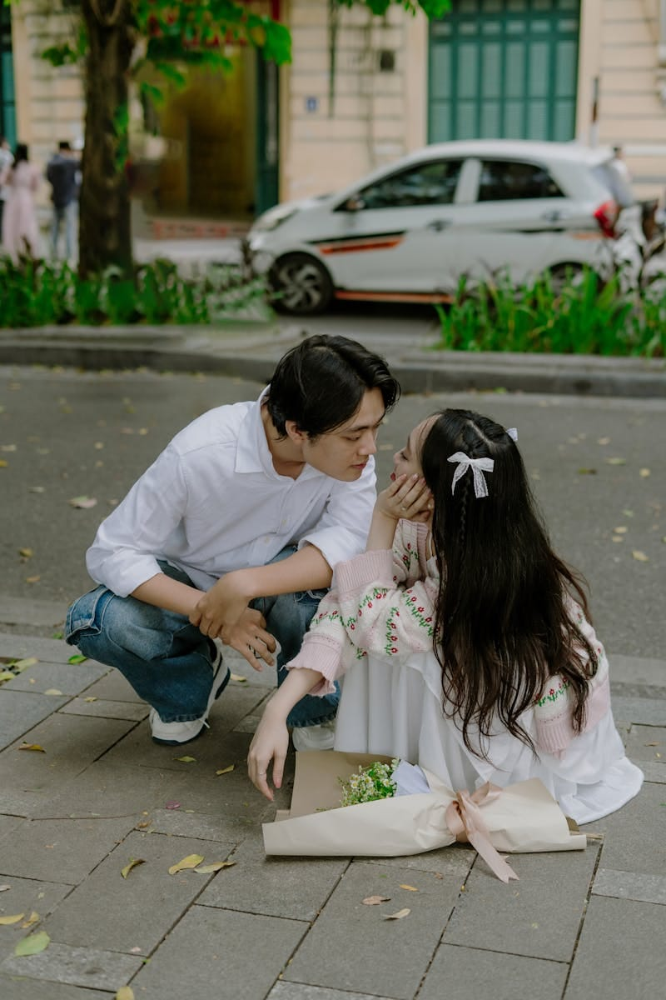

記事一覧
最近の記事

顔
「顔」 これにはいくつもの意味があります。 ・目、鼻、口がどの位置についているのか？ ・どんな表情をしているか？ ・どんな印象（イメージ）か？ 目、鼻、口の位置については誰と誰を比べてもほんの数ミリの差だったりします。 それぞれの大きさや…

意識するのは自分の表情
自分の表情を意識してみてください。 他人と接しているときのあなたの表情です。 相手の表情ばかり気にしがちですが、相手の表情より自分の表情のほうが重要です。 人は、相手の表情で、今の状態を読み取ろうとします。 不機嫌そうな表情を見れば、不機…
なりたいあなたになる
追い込まれてしまうのは、最悪な事態が起こったからではありません。 自分になすすべがないと感じているからです。 まず自分がどうしたいのか？ どうしなければいけないのかではないですよ。 そう考えると無理そうだと思ってしまいます。 どうなりたい…
今はそれだけで
未来を考えるとイライラする…。 未来を考えるとワクワクする…。 未来は誰にも分からないけど、そのさきに見ているものがちがいます。 不安を感じればストレスになりイライラします。 好奇心を持てば期待や希望になりワクワクします。 不安を感じる人…

「自分と合う人」を探す危険
永遠のパートナーになるということは、誰よりも強い信頼関係を築くということです。 ということは、当然１日２日でできることではありません。 永遠のパートナーと出会うのではなく、永遠のパートナーになっていくのです。 その過程こそが重要で、どんな…
焦る気持も分かりますが…
恋愛や結婚は焦れば焦るほど、うまくいかなくなります。 焦っている人を見ると、人は恐怖を感じます。 落ち着きません。安らぎません。関わりたくありません。 それが人の心理です。 だから恋愛や結婚を焦らないほうが、結果早くうまくいったりするもの…

大事な人になるヒント
本当はちっとも大事でもない人を大事に感じたり、本当はすごく大事な人を大事だと感じなくなったり、人はみんなうっかり間違えてしまう可能性があるのです。 本当は大事な人でないものを大事だと思えば、大事でないものにしがみつくことになるかもしれませ…

安らぎは休養とはちがいます
眠ることは、心にも体にも大事なことです。 特にこの寒い季節、眠るのが楽しみになるような工夫をしてみるといいですよ。 寝具はもちろん服装も、こだわってみてください。 自分の趣味全開で行きましょう。 お姫様でもキャラクターでもセクシーでも、自…
あたりまえのことじゃないですか？
本格的に寒くなってきました。 １１月も半分を過ぎたのですからあたりまえですよね。 寒さに嘆いてもしかたがないし、「寒くないんだ！」なんてやせ我慢しても、ますます寒さを意識してしまいます。 寒いのは当然と、暖かい服でおしゃれをたのしんだり、…

本物の恋と偽者の恋
お付き合いすれば、それが永遠のパートナーになるというわけではありません。 永遠のパートナーになっていくかどうかは、お付き合い中の関わり方によります。 永遠のパートナーになるうえで大事なのは、お互いが自分らしくい続けること。 いろいろな場面…